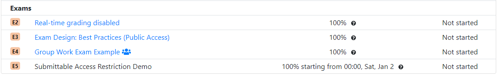

Thanks to great work by Eugene Chau, a student in the University of British Columbia, it is now possible to allow students to see assessments that are not available for submission, either before their release date, or after their deadline.
This feature allows students to visualize and plan for future assessments, potentially from the start of the term. It also allows instructors to release completed assessments for review while blocking any further submission.

You can set up your assessments to be visible, but not submittable
by creating a new access rule with the submittable
setting set to false. This will allow students that
have not started the assessment to see it while prevent them from
starting a new instance of the assessment. It will also allow
students that completing the assessment to see their answers, but
not to submit new ones.
"allowAccess": [
{
"startDate": "2015-02-16T00:00:01",
"endDate": "2015-02-16T23:59:59",
"timeLimitMin": 50,
"credit": 100
},
{
"startDate": "2015-01-01T00:00:01",
"endDate": "2015-05-15T23:59:59",
"submittable": false
}
]
For more information, see the documentation.
Want to help make PrairieLearn better? It's open source and contributions are welcome!